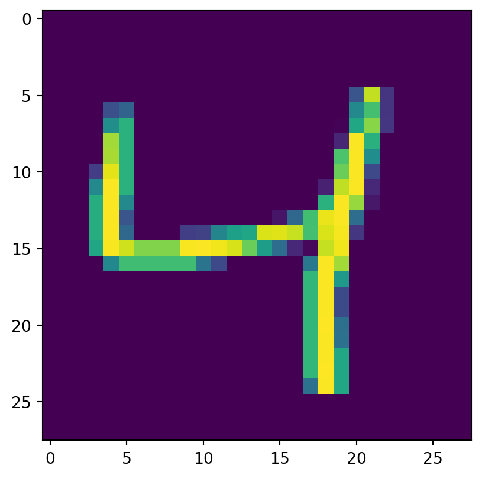

from tensorflow import keras
import numpy as np
from sklearn import metrics
import matplotlib.pyplot as pltMNIST
Falamos um pouco do MNIST no exemplo 6 e neste exemplo vamos ajustar uma rede neural convolucional para prever os dígitios do MNIST.
O banco de dados do MNIST pode ser obtido usando funções prontas do Keras.
(x_train, y_train), (x_test, y_test) = keras.datasets.mnist.load_data()Agora podemos visualizar algumas imagens do banco de dados:
plt.imshow(x_train[0])
plt.show()
plt.imshow(x_train[1])
plt.show()
plt.imshow(x_train[2])
plt.show()


Os vetores y_train e y_test possuem o valor representado pelo dígito que está na imagem.
print(y_train[0:3])[5 0 4]Note que as imagens do MNIST são tamanho 28x28x1 (o 1 vem do núemro de canais - como a imagem é P&B só temos 1 canal.)
x_train.shape(60000, 28, 28)Agora vamos definir o modelo. Ponto importantes:
- O input do modelo tem formato 28x28x1. Isso é a altura e largura das imagens do input é 28 e a imagem é P&B, 1 canal.
- As imagens estão representadas por número inteiros de 0 a 255, é importante fazer o rescaling e transformar esses valores em números entre 0 e 1, para não termos problemas com o algoritmo de otimização.
- Estamos usando 4 blocos de convolução/ pooling. Em cada um deles aumentamos o número de filtros da convolução e o ‘pooling’ será reponsável por diminuir o tamanho da imagem.
- O
Flattentira as dimensões que não estão sendo usadas e transforma o output em um vetor. - No final colocamos um MLP. Note que o número de outputs da última camada é 10, pois temos 10 classes possíveis (dígitos de 0 a 9). A ativação é softmax pois cada imagem pertence a uma única classe. Portanto as probabilidades por linha devem somar 1.
input = keras.layers.Input(shape=(28, 28, 1))
output = keras.layers.Rescaling(1.0/255.0)(input)
output = keras.layers.Conv2D(
kernel_size=(3, 3), filters=32, activation="relu", padding="same"
)(output)
output = keras.layers.MaxPool2D(pool_size=(2, 2))(output)
output = keras.layers.Conv2D(
kernel_size=(3, 3), filters=64, activation="relu", padding="same"
)(output)
output = keras.layers.MaxPool2D(pool_size=(2, 2))(output)
output = keras.layers.Conv2D(
kernel_size=(3, 3), filters=128, activation="relu", padding="same"
)(output)
output = keras.layers.MaxPool2D(pool_size=(2, 2))(output)
output = keras.layers.Conv2D(
kernel_size=(3, 3), filters=256, activation="relu", padding="same"
)(output)
output = keras.layers.MaxPool2D(pool_size=(2, 2))(output)
output = keras.layers.Flatten()(output)
output = keras.layers.Dense(128, activation="relu")(output)
output = keras.layers.Dense(10, activation="softmax")(output)2022-04-27 22:22:08.279452: I tensorflow/core/platform/cpu_feature_guard.cc:151] This TensorFlow binary is optimized with oneAPI Deep Neural Network Library (oneDNN) to use the following CPU instructions in performance-critical operations: AVX2 FMA
To enable them in other operations, rebuild TensorFlow with the appropriate compiler flags.Agora criamos o modelo do Keras
model = keras.Model(inputs=input, outputs=output)
model.summary()Model: "model"_________________________________________________________________ Layer (type) Output Shape Param # ================================================================= input_1 (InputLayer) [(None, 28, 28, 1)] 0 rescaling (Rescaling) (None, 28, 28, 1) 0 conv2d (Conv2D) (None, 28, 28, 32) 320 max_pooling2d (MaxPooling2D (None, 14, 14, 32) 0 ) conv2d_1 (Conv2D) (None, 14, 14, 64) 18496 max_pooling2d_1 (MaxPooling (None, 7, 7, 64) 0 2D) conv2d_2 (Conv2D) (None, 7, 7, 128) 73856 max_pooling2d_2 (MaxPooling (None, 3, 3, 128) 0 2D) conv2d_3 (Conv2D) (None, 3, 3, 256) 295168 max_pooling2d_3 (MaxPooling (None, 1, 1, 256) 0 2D) flatten (Flatten) (None, 256) 0 dense (Dense) (None, 128) 32896 dense_1 (Dense) (None, 10) 1290 =================================================================Total params: 422,026Trainable params: 422,026Non-trainable params: 0_________________________________________________________________Veja o número de parâmetros da primeira camada de convolução. Você pode pensar da seguinte forma:
- Cada kernel tem 3x3 parâmetros.
- Cada filtro tem 1 kernel.
- Cada filtro possui um viés.
- Total: 3x3x32 + 32
Para a segunda camada a conta é a mesma, mas o input agora não possui apenas um canal. Agora o input possui 32 canais então pensamos:
- Cada kernel tem 3x3x32 parâmetros.
- Cada filtro tem 1 kernel.
- Cada filtro possui um viés.
- Total: 3x3x32x64 + 64
Agora podemos compilar o modelo. Usamos a ‘sparse_categorical_crossentropy’ pois o problema de classificação em muitas classes. O sparse é usado para não precisar transformar o vetor de resposta y_train em uma matriz com one-hot encode.
model.compile(loss="sparse_categorical_crossentropy", optimizer="sgd", metrics=["accuracy"])Então, podemos ajustar o modelo:
model.fit(x_train, y_train, batch_size=32, epochs=5, validation_split=0.2,
verbose=2)Epoch 1/51500/1500 - 62s - loss: 0.8062 - accuracy: 0.7558 - val_loss: 0.1782 - val_accuracy: 0.9439 - 62s/epoch - 41ms/stepEpoch 2/51500/1500 - 53s - loss: 0.1357 - accuracy: 0.9585 - val_loss: 0.0961 - val_accuracy: 0.9704 - 53s/epoch - 35ms/stepEpoch 3/51500/1500 - 56s - loss: 0.0929 - accuracy: 0.9711 - val_loss: 0.0938 - val_accuracy: 0.9715 - 56s/epoch - 37ms/stepEpoch 4/51500/1500 - 53s - loss: 0.0712 - accuracy: 0.9773 - val_loss: 0.0754 - val_accuracy: 0.9763 - 53s/epoch - 35ms/stepEpoch 5/51500/1500 - 51s - loss: 0.0596 - accuracy: 0.9812 - val_loss: 0.0613 - val_accuracy: 0.9815 - 51s/epoch - 34ms/step<keras.callbacks.History at 0x7fae30c74e80>Vamos também verificar a matriz de confusão para a base de teste. Note que para encontrar a classe predita, pegamos a classe com maior probabilidade.
metrics.confusion_matrix(
y_test, np.argmax(model.predict(x_test), axis=1)
)array([[ 965, 0, 1, 0, 2, 1, 1, 3, 3, 4],
[ 0, 1126, 2, 0, 1, 1, 2, 2, 1, 0],
[ 0, 0, 1024, 2, 0, 0, 0, 6, 0, 0],
[ 0, 0, 0, 998, 0, 5, 0, 3, 3, 1],
[ 0, 0, 1, 0, 979, 0, 1, 0, 0, 1],
[ 1, 0, 0, 4, 1, 879, 2, 2, 0, 3],
[ 2, 2, 1, 0, 7, 8, 937, 0, 1, 0],
[ 0, 2, 6, 1, 1, 0, 0, 1013, 1, 4],
[ 2, 0, 5, 8, 5, 5, 0, 6, 933, 10],
[ 0, 3, 0, 2, 11, 1, 0, 4, 2, 986]])